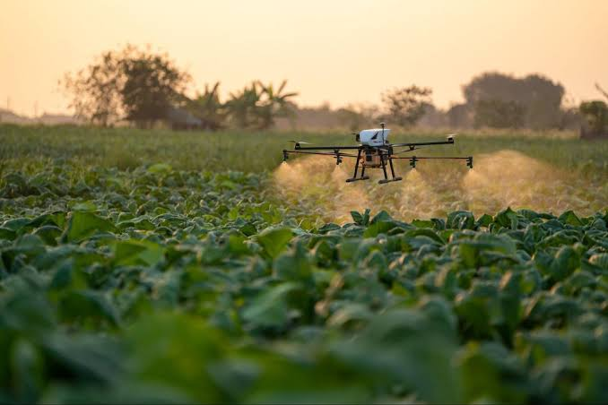
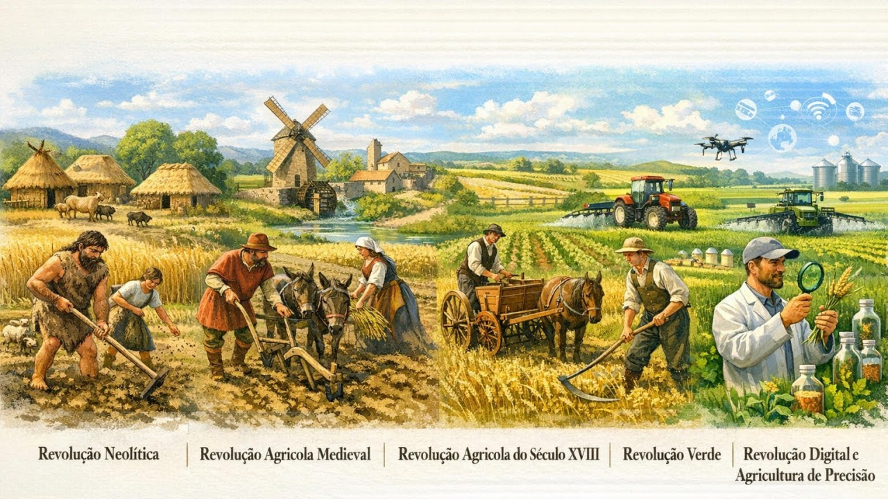
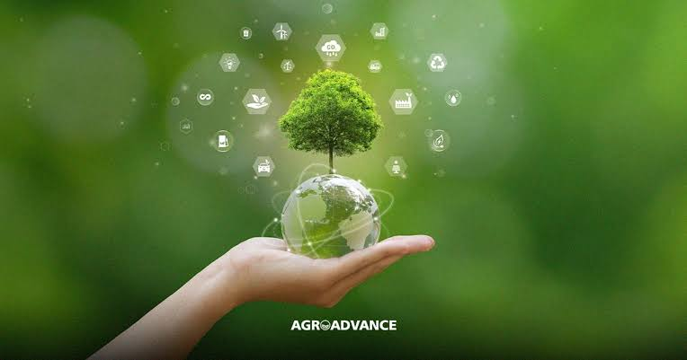

Com o pasar do tempo tivemos necessidade de evoluir por causa de necessidades que passamos. Isso gerou uma serie de revoluções no meio em como produzimos alimentos para uma melhor sobrevivencia das pessoas.

A agricultura evoluiu ao longo do tempo para atender à necessidade de alimentar uma população mundial crescente. A Revolução Verde, entre as décadas de 1940 e 1970, trouxe máquinas, fertilizantes químicos, agrotóxicos e sementes melhoradas, aumentando a produção de alimentos. No Brasil, esse processo ganhou força a partir dos anos 1960 e 1970, com a criação da Embrapa e o desenvolvimento agrícola do Cerrado. Com o passar dos anos, surgiram novas tecnologias, como GPS, drones, sensores, inteligência artificial e máquinas automatizadas, tornando a agricultura mais produtiva e precisa. Apesar dos avanços, a modernização também trouxe problemas, como a degradação ambiental e a redução de empregos no campo. Por isso, o principal desafio atual é produzir alimentos em maior quantidade sem prejudicar o meio ambiente, buscando uma agricultura mais sustentável.

Com a necessidade de evoluir fez com que o ser humano buscasse novas tecnologias que o ajudasse a obter melhores resultados, sejam para obter melhores produtos, produtos mais rápidos e coisas que facilitassem o trabalho.
A sustentabilidade das tecnologias do campo busca aumentar a produção agrícola sem prejudicar o meio ambiente. Tecnologias como drones, sensores e irrigação inteligente ajudam a economizar água, reduzir desperdícios e preservar o solo, tornando a agricultura mais eficiente e sustentável.
